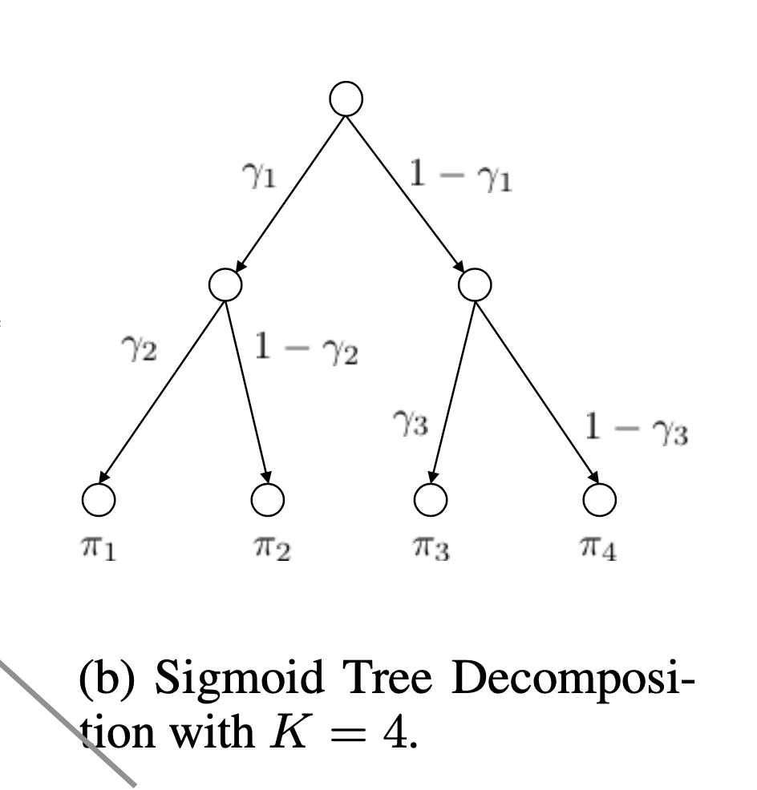
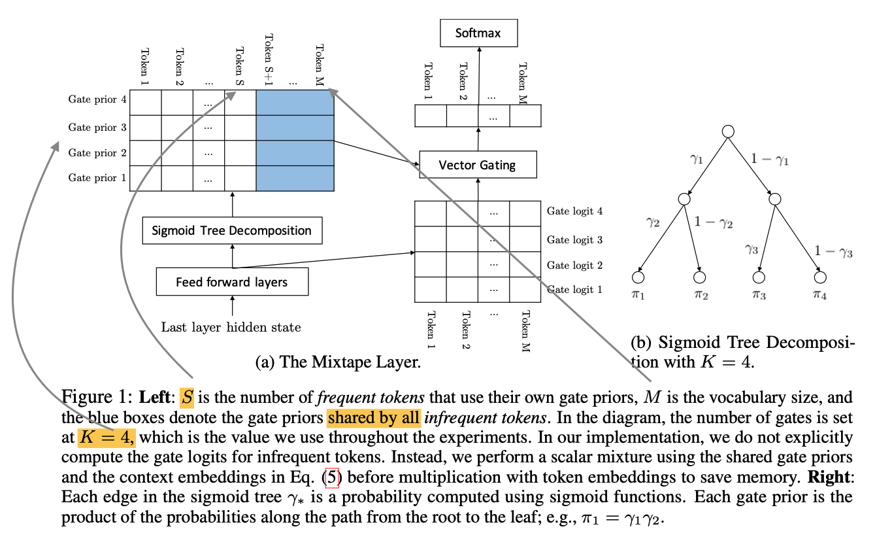

Outline
Today, I’ll finish up the two key ideas from the Mixtape contribution: Sigmoid Tree Decomposition, and Gate Sharing. Then look at three resulting conclusions.
Sigmoid Tree Decomposition

The first contribution of Vector Space Logit Gating was not on its own enough to provide sufficient performance benefits, and is helped by sigmoid tree decomposition in order to reduce the softmax priors computation cost. It is replaced by a tree of sigmoids, shown in (b) above. The move to sigmoids reduces the reduction and division compute overhead thus is more efficient.
A tree of K leaves requires (K-1) sigmoid operations. The paper uses K = 4 as it was proven to be effective across tests.
Gate sharing
The final contribution is to reduce the waste of computation on gate priors for infrequent tokens. The idea of gate sharing is to use the same gate priors for a all infrequent words. This results in a partially high rank matrix where the gate prior is not as high rank as possible, yet is more efficient and unaffected in performance: a good tradeoff.
Conclusions
Here’s a summary of their conclusions over MoS
Accuracy Mixtape is between 0.1% t0 0.2% improvement over MoS on translation tasks.
Efficiency Mixtape is between 3.5x and 10.5x faster given the same memory budget.
Gate Sharing In comparisons with using Gate Sharing, they found using the technique improves speed by more than 3x to 4x while almost negligible (.03) loss of perplexity.
Below Figure 1 shows their full algorithm.
